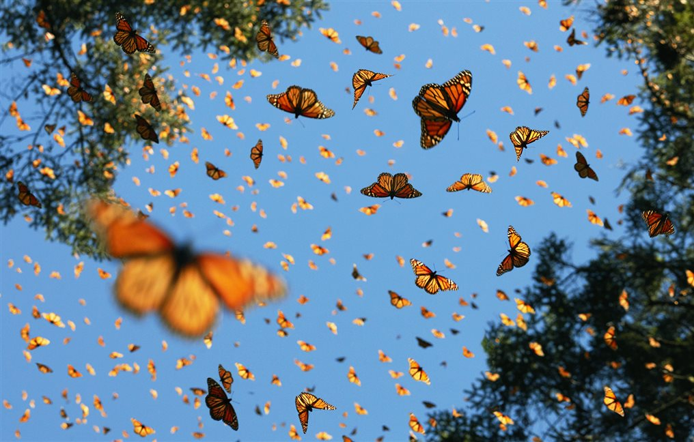
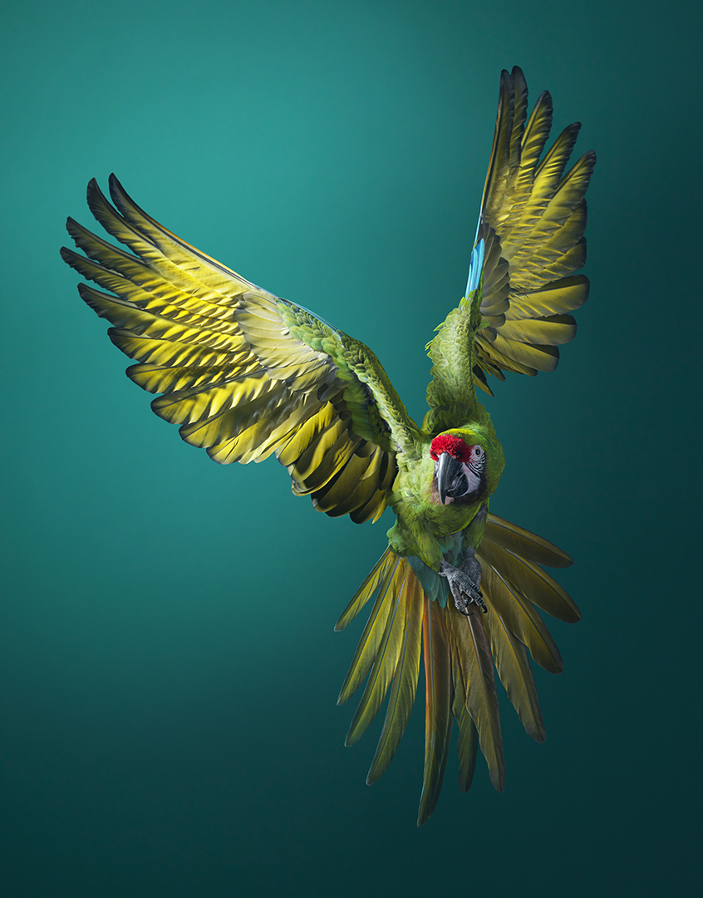

Causas de que los animales estén en peligro
Existen múltiples causas por las que una especie puede llegar a encontrarse al borde de la extinción. Las razones pueden resultar tremendamente particulares para cada especie, pero en líneas generales, entre las mayores amenazas se encuentra la destrucción y fragmentanción de sus hábitats; el cambio climático; la caza y tráfico ilegal; y la introducción de especies exóticas.
Ejemplos de animales en peligro de extinción y su causa:

Lemur
Solo queda el 10% de los bosques históricos de Madagascar, los cuales sustentan a estos lémures en peligro crítico. Con una gran pasión por el néctar, se cree que los lémures son los polinizadores más grandes del mundo. A diferencia de la mayoría de los primates, dan a luz a grandes camadas, por lo que prosperan en cautiverio, donde las tasas de supervivencia son altas. Pero debido a que han sido criados a partir de un grupo genético muy pequeño, las reintroducciones posteriores entrañan muchas complicaciones. Su conservación se logrará cuando simplemente los dejemos en paz en un dosel de selva virgen.

Insectos
Cada invierno, cientos de millones de insectos realizan un viaje de varios miles de kilómetros, a pesar de que cada uno pesa menos que un billete de euro. En uno de los fenómenos más espectaculares del mundo natural, las mariposas monarca migran desde Canadá y el norte de los Estados Unidos a México y California, donde cubren los bosques de pinos en naranja, blanco y negro.

Guacamayos Militares
Los guacamayos militares tienen algunas de las voces más fuertes de los bosques de Sudamérica. No conocen sus llamadas de forma innata, sino que las aprenden de sus padres y compañeros, lo que da lugar a dialectos locales que distinguen a un grupo de otro. En la naturaleza, los guacamayos militares permanecen monógamos de por vida, y como mascotas son aves excepcionalmente leales. Su belleza y buena compañía los pone en gran demanda de la industria de mascotas, pero muchos comerciantes los toman de la naturaleza, en lugar de criarlos en cautiverio.